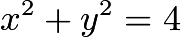
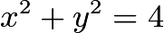

2022 AMC 10B Problems/Problem 22
- The following problem is from both the 2022 AMC 10B #22 and 2022 AMC 12B #21, so both problems redirect to this page.
Contents
Problem
Let  be the set of circles in the coordinate plane that are tangent to each of the three circles with equations
be the set of circles in the coordinate plane that are tangent to each of the three circles with equations  ,
,  , and
, and  . What is the sum of the areas of all circles in ?
. What is the sum of the areas of all circles in ?

Solution 1
![[asy] import geometry; unitsize(0.5cm); void dc(pair x, pen p) { pair y = intersectionpoints(circle((0,0),8),(0,0)--1000*x)[0]; draw(circle(x, abs(x-y)),p+linewidth(2)); } pair O1 = (0,0),O2=(5,0),P1=intersectionpoints(circle(O1,5),circle(O2,3+sqrt(3)))[0],P2=intersectionpoints(circle(O1,3),circle(O2,5+sqrt(3)))[0],P3=intersectionpoints(circle(O1,5),circle(O2,3-sqrt(3)))[0],P4=intersectionpoints(circle(O1,3),circle(O2,5-sqrt(3)))[0]; draw(circle(O1,2)); draw(circle(O1,8)); draw(circle(O2,sqrt(3))); dc(P1,blue); dc(P2,red); dc(P3,mediumgreen); dc(P4,brown); [/asy]](http://latex.artofproblemsolving.com/1/4/4/1449e0177cbfede22b42db992e651c5ef90b438b.png) The circles match up as follows: Case
The circles match up as follows: Case  is brown, Case
is brown, Case  is blue, Case
is blue, Case  is green, and Case 4 is red.
Let
is green, and Case 4 is red.
Let  be circle
be circle  ,  be circle
,  be circle  , and
, and  be circle
be circle  .
All the circles in S are internally tangent to circle .
There are four cases with two circles belonging to each:
.
All the circles in S are internally tangent to circle .
There are four cases with two circles belonging to each:
 and are internally tangent to .
and are internally tangent to .
and are externally tangent to .
is externally and Circle is internally tangent to .
is internally and Circle is externally tangent to .
Consider Cases and  together. Since circles and have the same center, the line connecting the center of and the center of will pass through the tangency point of both and and the tangency point of and . This line will be the diameter of and have length
together. Since circles and have the same center, the line connecting the center of and the center of will pass through the tangency point of both and and the tangency point of and . This line will be the diameter of and have length  . Therefore the radius of in these cases is
. Therefore the radius of in these cases is  .
.
Consider Cases and together. Similarly to Cases and , the line connecting the center of to the center of will pass through the tangency points. This time, however, the diameter of will have length  . Therefore, the radius of in these cases is .
. Therefore, the radius of in these cases is .
The set of circles consists of  circles - of which have radius and of which have radius .
The total area of all circles in is
circles - of which have radius and of which have radius .
The total area of all circles in is  .
.
-naman12
Solution 2
We denote by  the circle that has the equation .
We denote by
the circle that has the equation .
We denote by  the circle that has the equation .
We denote by
the circle that has the equation .
We denote by  the circle that has the equation .
the circle that has the equation .
We denote by  a circle that is tangent to , and .
We denote by
a circle that is tangent to , and .
We denote by  the coordinates of circle , and
the coordinates of circle , and  the radius of this circle.
the radius of this circle.
From the graphs of circles , , , we observe that if is tangent to all of them, then must be internally tangent to .
We have
![\[ u^2 + v^2 = \left( 8 - r \right)^2 . \hspace{1cm} (1) \]](http://latex.artofproblemsolving.com/d/8/5/d85be3fd5c5fdb35d9256891270162de6ae529fd.png)
We do the following casework analysis in terms of the whether is externally tangent to and .
Case 1: is externally tangent to and .
We have
![\[ u^2 + v^2 = \left( r + 2 \right)^2 \hspace{1cm} (2) \]](http://latex.artofproblemsolving.com/7/d/5/7d525ba873cf98a7a62ec1f81824a311933a5309.png) and
and
![\[ (u-5)^2 + v^2 = \left( r + \sqrt{3} \right)^2 . \hspace{1cm} (3) \]](http://latex.artofproblemsolving.com/6/9/2/6925f7a7b94efe2d8f181d24acac435edc51e73f.png)
Taking  , we get
, we get  . Thus,
. Thus,  .
We can further compute (omitted here) that there exist feasible
.
We can further compute (omitted here) that there exist feasible  with this given .
with this given .
Case 2: is internally tangent to and is externally tangent to .
We have
![\[ u^2 + v^2 = \left( r - 2 \right)^2 \hspace{1cm} (2) \]](http://latex.artofproblemsolving.com/5/4/f/54f9c8344155ff612ca250252969c3fd2b345f39.png) and
and
Taking , we get  . Thus,
. Thus,  .
We can further compute (omitted here) that there exist feasible with this given .
.
We can further compute (omitted here) that there exist feasible with this given .
Case 3: is externally tangent to and is internally tangent to .
We have
and
![\[ (u-5)^2 + v^2 = \left( r - \sqrt{3} \right)^2 . \hspace{1cm} (3) \]](http://latex.artofproblemsolving.com/a/b/e/abe14d3f537610314147197ff8d9f50e580391b5.png)
Taking , we get . Thus, .
We can further compute (omitted here) that there exist feasible with this given .
Case 4: is internally tangent to and is internally tangent to .
We have
and
Taking , we get . Thus, .
We can further compute (omitted here) that there exist feasible with this given .
Because the graph is symmetric with the  -axis, and for each case above, the solution of
-axis, and for each case above, the solution of  is not 0. Hence, in each case, there are two congruent circles whose centers are symmetric through the -axis.
is not 0. Hence, in each case, there are two congruent circles whose centers are symmetric through the -axis.
Therefore, the sum of the areas of all the circles in is  .
.
~Steven Chen (Professor Chen Education Palace, www.professorchenedu.com)
~MrThinker (LaTeX Error)
Video Solution by OmegaLearn using Circular Tangency
~ pi_is_3.14
Video Solution
~ThePuzzlr
~Steven Chen (Professor Chen Education Palace, www.professorchenedu.com)
Video Solution by TheBeautyofMath
With additional justification reasoning for certain statements made. Also an additional twist on a potential similar alternate problem at the end. https://youtu.be/r-jNrjKIXTU
~IceMatrix
Video Solution by The Power of Logic(#20-#21)
Video Solution by Interstigation
~Interstigation
See Also
| 2022 AMC 10B (Problems • Answer Key • Resources) | ||
| Preceded by Problem 21 |
Followed by Problem 23 | |
| 1 • 2 • 3 • 4 • 5 • 6 • 7 • 8 • 9 • 10 • 11 • 12 • 13 • 14 • 15 • 16 • 17 • 18 • 19 • 20 • 21 • 22 • 23 • 24 • 25 | ||
| All AMC 10 Problems and Solutions | ||
| 2022 AMC 12B (Problems • Answer Key • Resources) | |
| Preceded by Problem 20 |
Followed by Problem 22 |
| 1 • 2 • 3 • 4 • 5 • 6 • 7 • 8 • 9 • 10 • 11 • 12 • 13 • 14 • 15 • 16 • 17 • 18 • 19 • 20 • 21 • 22 • 23 • 24 • 25 | |
| All AMC 12 Problems and Solutions | |
The problems on this page are copyrighted by the Mathematical Association of America's American Mathematics Competitions.